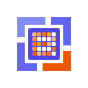

Most agent harnesses ship instructions and skills. basicly also ships the workflow and the state — a deterministic development loop, the work graph it derives progress from, and git gates that hold whether or not the model read the guidance.
What it is
Guidance and gates are the classic harness bargain: prose a model may ignore, plus checks that do not care whether it did. The other two are the difference — basicly owns the process the work moves through and the state that process reads.
One versioned YAML catalog, projected into what each tool
natively reads: CLAUDE.md, AGENTS.md,
copilot-instructions.md, skills, subagents,
permissions.
Edit one fragment and every target regenerates consistently. Your overrides live in an overlay that upgrades never touch.
Git hooks across pre-commit, commit-msg and pre-push, plus agent
hooks for Claude Code and Copilot, and a verify pipeline with
fast, full and staged
modes.
The model choosing to run a formatter is a different thing from the formatter running automatically. Where a hook can enforce a rule, the rule is a hook.
A development process shipped as commands: intake, classify, decompose, build, verify, ship, teardown, retro — driven the same way under Claude, Codex or Copilot.
Work builds in an isolated worktree. Run one track at a time, or fan out parallel lanes behind a supervisor and a serial merge queue.
Issues, dependencies, gate results, checkpoints and evidence live in a tracked graph. The loop keeps no side-state: the phase a track sits in is derived from that graph.
So a session can crash, compact, or hand over to a different agent family mid-track, and the next command picks it up by re-reading the graph.
What makes it different
Plenty of projects ship an agent workflow. What is unusual here is that the workflow is deterministic engine code rather than prose an agent is asked to follow, and that the gates it runs are the same ones your commits already pass.
| Concern | A guidance-only harness | basicly |
|---|---|---|
| The workflow | Markdown describing the steps an agent should take | Engine code with one command per phase boundary; anything fully deterministic is a command, never a procedure to remember |
| Enforcement | Asks the model nicely; compliance depends on the prompt | Git hooks and a verify runner. A required gate is never passed by a model, at any autonomy level |
| Progress state | Plan files and conversation memory, which compaction loses | A dependency graph the phase is derived from, so resume is a read rather than a replay |
| Authority | An orchestrator agent decides what happens next | Agents propose, the engine disposes. Every agent runs as a pure function of state and returns a proposal the engine validates |
| Autonomy | Usually all-or-nothing | Opt-in, four levels, granted only from a real terminal and recorded with a spend ceiling. Human checkpoints hold by default |
Install
With uv on the machine:
$ uvx --from git+https://github.com/niksavis/basicly@v0.5.1 basicly install
No uv or Python yet? The bootstrap shim installs uv first, then runs the same command:
$ curl -fsSL https://raw.githubusercontent.com/niksavis/basicly/main/.scripts/bootstrap.sh | sh
Windows (PowerShell):
> powershell -ExecutionPolicy Bypass -Command "irm https://raw.githubusercontent.com/niksavis/basicly/main/.scripts/bootstrap.ps1 | iex"
--technologies python,zsh ships only the catalog
content that matches.
basicly uninstall removes
everything managed; your overlay survives.
How it works
The distribution plane turns authored sources into the files your agents read. The execution plane drives a unit of work through the loop. They meet in exactly two places: a dispatched agent's context is the projected guidance, and the loop's verify step runs the same checks the hooks run.
Orange nodes are human checkpoints. Scale out with
basicly loop supervise: one worktree per work package,
landed serially through a merge queue in dependency order, with
conflicts bounced back to the lane that owns them rather than resolved
at merge time.
.basicly-local/; installs and upgrades never touch
them.
Where it stands
The architecture reference separates the system as it exists in code from where it is going, and so does this page.
Catalog and projection with drift gates, the git and agent hook floor, the single-track loop, worktree isolation, parallel lanes with a supervisor and merge queue, autonomy grants, and release automation. All of it developed through the loop itself.
Named roles per judgment step, a gate taxonomy with convergence detection, and owning the work tracker in-process instead of depending on an external binary.
Whether each catalog entry earns its context cost. Structural checks prove an entry is well-formed and projected, never that it changes behaviour — so routing and behavioural evals are the current work, and claims stay labelled until they are evidence.
Learn more